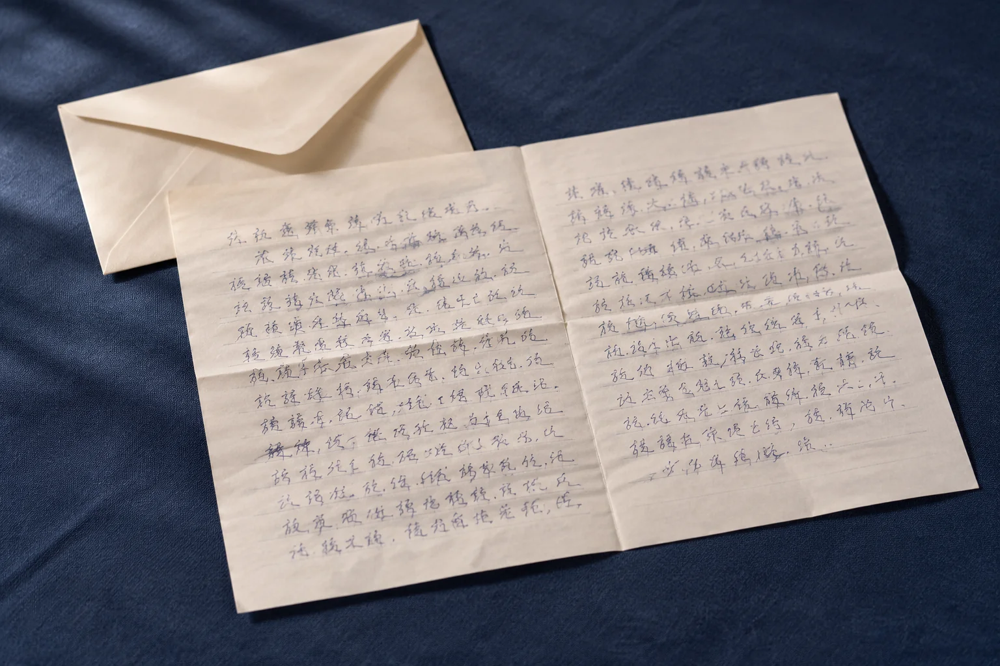

上海手写信件有续页，模仿笔迹参考别漏看跨页的句子
一段文字写到页尾没有结束，下一页接着写，布局与单页短笺就不一样了。读参考材料时，页与页之间的关系也值得保留。

续页关系先核实
上海模仿笔迹长文参考如果包含多页，应先确认原来顺序和是否缺页。只凭纸色相近不能认定前后连续，能够核对的文字衔接、页码及提供者说明应一起记录。没有顺序依据时，可以按收到顺序整理，但需明确它不代表原始文件顺序。
页尾收紧不一定是固定习惯
文字接近纸边时，作者可能缩小字距，也可能直接换页。观察应把最后几行和下一页开头一起看，不只挑最拥挤的一处。对比几份同类长文，才能继续确认哪些安排反复出现，哪些仅是某一页剩余空间造成的变化。
落款不能替代前面内容
模仿签名、模仿签字参考通常在最后一页，姓名局部应与整页对应。末页有署名不自动证明此前每张图片属于同一原件，更不能用其他文件补齐缺失页。保存真实材料关系，比把一组图片整理成看似完整的信件更重要。
交接清单留出未知项
笔迹鉴定资料中的页数、来源和形成时间，应按实际能确认的范围填写。补到续页时记录新来源并更新对应，不删除原来的缺页说明。这样后来阅读材料的人能知道哪些信息从一开始就存在，哪些是后续补充确认的。